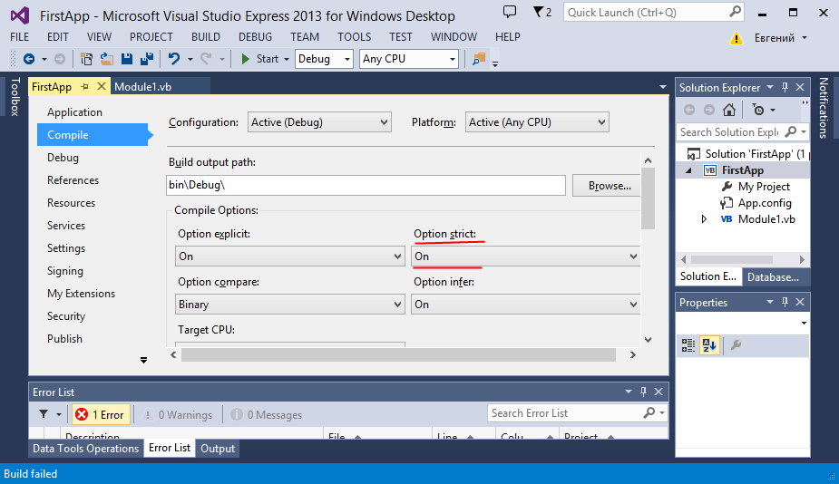

Итак, как вы выше увидели, каждый тип данных характеризуется определенным количеством байт, которое этот тип занимает в памяти. При этом для нас вполне логичным было бы написать что-то вроде:
1 2 | Dim x As Byte = 6 Dim y As Integer = x + 45 |
В то же время эта запись не совсем эквивалентна следующей, хотя результат один и тот же:
1 2 | Dim x As Byte = 6 Dim y As Byte = x + 45 |
Все дело в том, что в первом случае компилятор применяет преобразование типов: он преобразует данные типа Byte в данные типа Integer. Данный тип преобразований называется расширяющим (widening), так как тип Byte расширяет свой размер до размера типа Integer.
Кроме расширяющих преобразований есть еще и сужающие:
1 2 3 | Dim num1 As Integer = 1Dim num2 As Integer = 2Dim res As Byte = num1 + num2 |
В этом случае переменные num1 и num2 типа Integer сужались до типа Byte. Однако с сужающими преобразованиями, особенно с теми, которые выполняются неявно, как в нашем случае, надо обращаться осторожно. Так, следующий код выбросит исключение OverflowException:
1 2 3 | Dim num1 As Integer = 100Dim num2 As Integer = 200Dim res As Byte = num1 + num2 |
Что в принципе не удивительно, так как итоговое число - 300 больше максимального числа, которое может представлять тип Byte, то есть больше 255.
Другой момент, который надо затронуть, - это явные (explicit conversion) и неявные (implicit conversion) преобразования. Все выше перечисленные преобразования выполнялись у нас неявно. То есть компилятор сам выполнял преобразование из типа Integer в тип Byte без дополнительных команд. Мы можем явно запретить неявные сужающие преобразования, установив в самом верху кода программы оператор Option Strict On. Кроме того, мы можем установить этот оператор применительно ко всему проекту через свойства проекта (в меню выберите пункт Проект(Project) и в появившемся меню выберите пункт Свойства (Properties)):
После установки для данного оператора значения On строчка Dim res As Byte = num1 + num2 будет рассматриваться как ошибочная.
В этом случае мы должны будем явно преобразовывать типы с помощью соответствующих методов:
1 2 3 | Dim num1 As Integer = CInt(Console.ReadLine())Dim num2 As Integer = 2Dim res As Byte = CByte(num1) + CByte(num2) |
В данном случае метод CInt преобразует вводимую строку в число типа Integer, а метод CByte преобразует число из типа Integer
в тип Byte. В языке VB.NET применяются следующие методы для преобразований типов:
Метод CBool преобразует в тип Boolean любой числовой тип (включая Byte, SByte и типы перечисления), а также String, Object
Метод CByte преобразует в Byte любой числовой тип (включая SByte и типы перечисления), а также Boolean, String, Object
Метод CChar преобразует в Char объекты String, Object
Метод CDate преобразует в Date объекты String, Object
Метод CDbl преобразует в Double любой числовой тип (включая Byte, SByte и типы перечисления), а также Boolean, String, Object
Метод CDec преобразует в Decimal любой числовой тип (включая Byte, SByte и типы перечисления), а также Boolean, String, Object
Метод CInt преобразует в Integer любой числовой тип (включая Byte, SByte и типы перечисления), а также Boolean, String, Object
Метод CLng преобразует в Long любой числовой тип (включая Byte, SByte и типы перечисления), а также Boolean, String, Object
Метод CObj преобразует в Object любой тип данных
Метод CSByte преобразует в SByte любой числовой тип (включая Byte и типы перечисления), а также Boolean, String, Object
Метод CShort преобразует в Short любой числовой тип (включая Byte, SByte и типы перечисления), а также Boolean, String, Object
Метод CSng преобразует в Single любой числовой тип (включая Byte, SByte и типы перечисления), а также Boolean, String, Object
Метод CStr преобразует в String любой числовой тип (включая Byte, SByte и типы перечисления), а также Boolean, Char, массив Char, Date, Object
Метод CUInt преобразует в UInteger любой числовой тип (включая Byte, SByte и типы перечисления), а также Boolean, String, Object
Метод CULng преобразует в ULong любой числовой тип (включая Byte, SByte и типы перечисления), а также Boolean, String, Object
Метод CUShort преобразует в UShort любой числовой тип (включая Byte, SByte и типы перечисления), а также Boolean, String, Object
Кроме того, для преобразования типов мы можем использовать функцию CType. Она принимает два параметра: первый параметр представляет переменную, которую надо преобразовать, а второй параметр - тип данных, в который надо эту переменную преобразовать. В следующем коде мы приводим переменную num3 к типу Byte:
1 2 | Dim num2 As Integer = 2Dim num3 = CType(num2, Byte) |